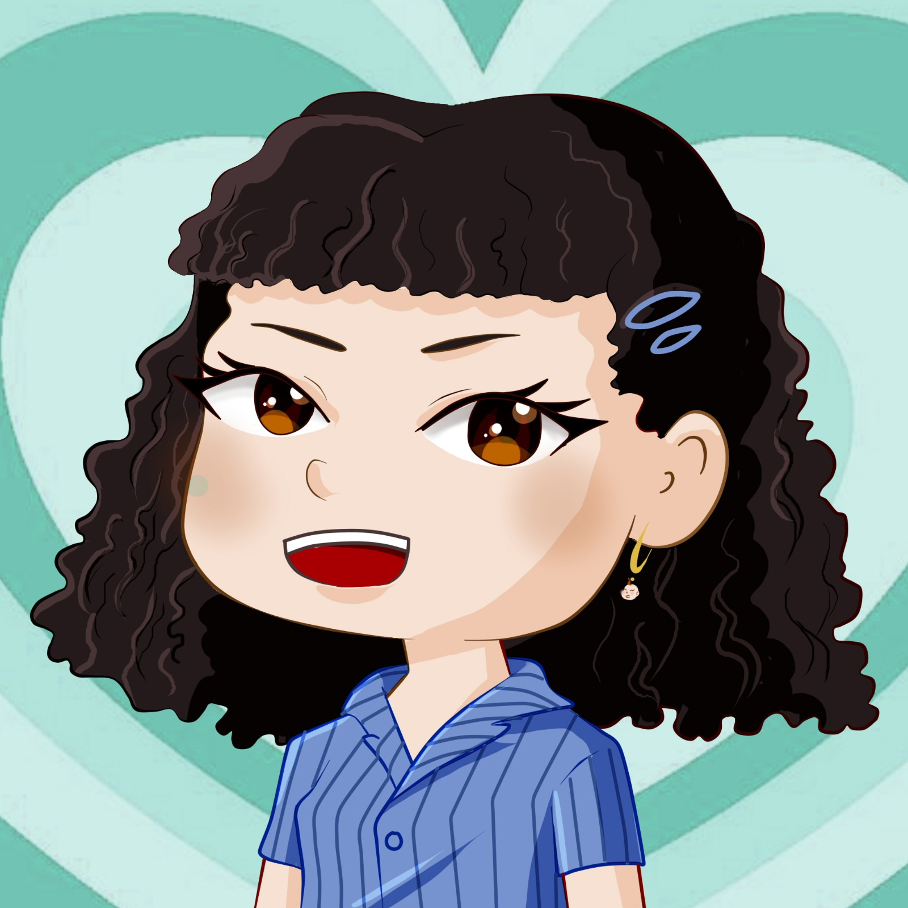

¿QUIÉNES SOMOS?
Flor Andrea Alanis Salazar

Daisy Danna Góngora Luévano

Marcela Martinez Montoya
Estudiantes de noveno semestre en la licenciatura en Edición y Gestión de la Cultura, de la Facultad de Filosofía y Letras perteneciente a la Universidad Autónoma de Nuevo León. Nuestra página web corresponde a el Producto Integrador de Aprendizaje de la materia Edición Multimedia y Diseño Web.
CRÉDITOS
Andrea Alanis - "Literatura", Ilustraciones, Tiktok
Daisy Góngora - "Inicio", "Nosotras", Formulario, Correcciones
Marcela Martinez - "Cultura", Recorrido virtual